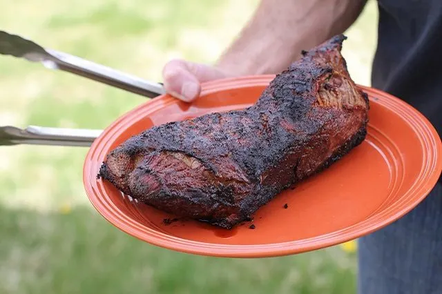

Coffee Rub Tri-Tip!

This coffee rub tri tip is absolutley delicious. The coffee mixes with the smoke and the garlic in the rub and the results are unbelievable.
1 teaspoon of:
- Course Sea Salt
- Instant Coffee Crystals
- Garlic Powder
- Smoked Paprika
1/2 teaspoon of:
- Cracked Black Pepper
- Crushed Coriander
- Onion Powder
1/4 teaspoon of:
- Cayenne Pepper
- Chilli Powder
Cooking Instructions:
- Pull out Tri Tip from the fridge, and let it sit on the counter for about 2 hours, apply rub generously
- pre heat smoker to 225*
- Throw the Tri Tip on for about 1.5 hours depending on size. I pull mine at about 130* internal temperature
- Crank up the heat to 475* and let grill pre heat for 10 mins, covering tri tip in the meantime.
- Throw the meat back on, and sear each side for about 3.5 minutes. (For added style points use a cast iron skillet.)
- Pull Tri Tip, loosley cover, let rest for a MINIMUM of 6 minutes.